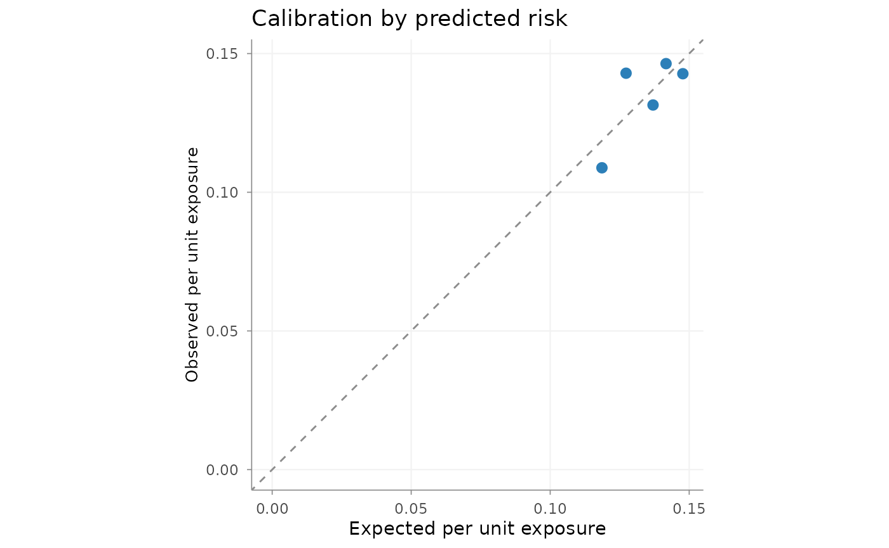

What does model validation mean?
Validation of an insurance pricing model is broader than comparing fit statistics. A model may describe the estimation data well while producing unstable, weakly supported or actuarially implausible tariff relativities. Conversely, a statistically detectable imperfection may have little practical pricing effect in the insured portfolio.
No single metric determines whether a model is adequate. A validation review normally combines several dimensions:
| Dimension | Practical question |
|---|---|
| Statistical adequacy | Are the model structure and distribution broadly consistent with the data? |
| Predictive performance | How well does the model predict the relevant outcome, preferably outside the estimation sample where appropriate? |
| Stability | How sensitive are estimates or performance to variation in the observed sample? |
| Tariff plausibility | Are the effects interpretable, credible and suitable for the intended tariff? |
| Portfolio behaviour | Where does expected experience differ systematically from observed experience? |
These dimensions are complementary rather than a mandatory sequence. Their relative importance depends on the response, portfolio, modelling objective and intended use of the tariff.
This vignette starts from fitted models. Getting Started provides the worked modelling example, while Pricing workflow and package building blocks maps validation within the wider package.
Validation map
The following functions support different validation questions. Not every model requires every diagnostic.
| Validation question | Typical tool |
|---|---|
| How do alternative fitted models compare? | model_performance() |
| Are tariff relativities plausible and sufficiently supported? | rating_table() |
| Does marginal observed experience support the fitted pattern? | add_factor_experience() |
| How sensitive is measured performance to portfolio resampling? | validate_performance() |
| How sensitive are the fitted coefficients to portfolio resampling? | coefficient_stability() |
| Is a Poisson frequency model materially overdispersed? | check_overdispersion() |
| Do simulation-based residuals show remaining structure? | check_residuals() |
| Where does the model over- or under-predict? | calibration_analysis() |
Compact example setup
Most examples use two Poisson frequency models fitted to the same records, response and exposure definition. Each prediction is an expected claim count for the observed policy period because it includes the earned-exposure offset.
library(insurancerating)
portfolio <- as.data.frame(MTPL2)
portfolio$area <- factor(portfolio$area)
portfolio$area <- set_reference_level(portfolio$area, portfolio$exposure)
intercept_model <- glm(
nclaims ~ 1 + offset(log(exposure)),
family = poisson(),
data = portfolio
)
area_model <- glm(
nclaims ~ area + offset(log(exposure)),
family = poisson(),
data = portfolio
)The fitted model is starting material here; construction of frequency, severity and technical risk-premium models is covered elsewhere.
Comparing model performance
model_performance(intercept_model, area_model)
#> # Comparison of Model Performance Indices
#>
#> Model | AIC | BIC | RMSE | Residual_Deviance
#> ----------------+----------+----------+-------+------------------
#> intercept_model | 2284.056 | 2290.063 | 0.356 | 1608.352
#> area_model | 2287.25 | 2311.275 | 0.356 | 1605.545model_performance() reports AIC, BIC, response-scale
RMSE and residual deviance:
- AIC and BIC compare likelihood fit while penalising model complexity;
- residual deviance describes the remaining lack of fit on the estimation data;
- RMSE summarises prediction error in the response unit and gives relatively high weight to large errors because it squares them. The RMSE itself is unweighted. Here the response unit is claim count, not claims per unit exposure.
These values are most directly comparable when models use the same response, estimation records, weights and offsets, as they do here. Residual deviances should also be compared within the same model family. RMSE uses only the rows retained in the fit. None of these values establishes performance on a future portfolio.
Lower values can support a model comparison, but a small improvement does not automatically imply a better tariff. Exposure by level, coefficient stability, residual behaviour, observed experience and practical interpretability remain part of the assessment.
Inspecting tariff structure and observed experience
rating_table() expresses fitted GLM effects as tariff
relativities and shows the exposure supporting each level. This makes
the statistical output easier to review in actuarial terms. Observed
experience can be attached to the same table for a direct graphical
comparison.
For this comparison, use MTPL, which also contains
policyholder age. The model estimates regional effects at the same age,
while the observed frequency reflects each region’s actual mix of
ages.
tariff_portfolio <- as.data.frame(MTPL)
tariff_portfolio$zip <- set_reference_level(
factor(tariff_portfolio$zip), tariff_portfolio$exposure
)
tariff_model <- glm(
nclaims ~ zip + age_policyholder + offset(log(exposure)),
family = poisson(), data = tariff_portfolio
)
tariff_table <- rating_table(
"Age-adjusted model" = tariff_model,
model_data = tariff_portfolio,
exposure = "exposure"
)
tariff_table
#> risk_factor level est_Age-adjusted model exposure
#> 1 (Intercept) (Intercept) 0.3121503 NA
#> 2 zip 0 1.0006508 207
#> 3 zip 1 1.0000000 11081
#> 4 zip 2 0.9020158 7783
#> 5 zip 3 0.9559945 7588
#> 6 age_policyholder age_policyholder 0.9831025 NA
tariff_review <- tariff_table |>
add_factor_experience(
data = tariff_portfolio,
risk_factors = "zip",
claim_count = "nclaims",
exposure = "exposure",
metric = "frequency",
label = "Observed frequency"
)
autoplot(
tariff_review,
risk_factors = "zip",
metric = "frequency"
)
A model with slightly better aggregate fit can still be unattractive when it creates volatile neighbouring relativities, extreme effects supported by little exposure or shapes without a plausible risk interpretation. An extreme coefficient in a small segment should therefore not be interpreted in the same way as the same coefficient supported by a substantial share of the portfolio.
For region 0, the observed frequency is about 2.5% below the
reference region’s frequency, while the fitted model estimates almost no
difference at the same age. Region 0 also has relatively little
exposure. The gap is a reason to look at the age mix and claim volume,
not evidence by itself of poor calibration. Use
calibration_analysis() to compare full-model predictions
with actual outcomes.
Assessing resampling stability
Unlike model_performance(),
validate_performance() refits the model for each sample. By
default, it fits and scores on the same bootstrap sample. The example
below instead scores on rows left out of each fit.
set.seed(123)
resample_result <- validate_performance(
area_model,
portfolio,
n_resamples = 50,
sample_fraction = 0.8,
sampling = "bootstrap",
show_progress = FALSE,
metrics = c("rmse", "mae", "deviance")
)
head(resample_result$scores)
#> rmse mae deviance
#> 1 0.3436239 0.2051759 708.7991
#> 2 0.3715056 0.2115858 746.2368
#> 3 0.3766939 0.2101049 785.8242
#> 4 0.3584633 0.2047888 761.8024
#> 5 0.3542650 0.2069595 716.3567
#> 6 0.3422794 0.2106021 687.1987
autoplot(resample_result, metric = "rmse")
Here, sample_fraction = 0.8 means 80 draws per 100 rows,
with replacement. Some rows can be drawn more than
once. The model is scored on rows not used for training (the
out-of-bag rows), not on a fixed 20% test set. With
sampling = "split" and a fraction below 1, the draw is
without replacement and the remaining rows are held out.
RMSE and MAE measure error in claim counts here. The dashed orange line is the original model’s RMSE on the full supplied portfolio, not on the out-of-bag rows used for the histogram. The table also reports predictive deviance: the same calculation as residual deviance, applied to the evaluation rows and their predictions. Total deviance depends on the number and weight of those rows as well as prediction quality.
A wide spread of scores may reflect differences between refitted
models, differences in the claim mix of the evaluation samples, or both.
Use coefficient_stability() to examine the fitted effects
themselves. Evaluation on out-of-bag or split rows is out of sample for
each refit, but does not replace validation on a later or external
portfolio.
How stable are the tariff relativities?
coefficient_stability() draws rows with replacement from
the estimation portfolio and refits the GLM. It summarises the fitted
effects, not prediction errors. For this log-link model,
scale = "relativity" expresses each area effect as a ratio
to the original reference area.
area_stability <- coefficient_stability(
area_model, n_resamples = 100, seed = 123, show_progress = FALSE
)
effects <- summary(area_stability, scale = "relativity")
knitr::kable(
effects[effects$term != "(Intercept)",
c("term", "estimate", "lower", "upper", "n_successful", "n_requested")],
digits = 2
)| term | estimate | lower | upper | n_successful | n_requested | |
|---|---|---|---|---|---|---|
| 2 | area0 | 0.55 | 0.00 | 1.78 | 100 | 100 |
| 3 | area2 | 0.87 | 0.69 | 1.11 | 100 | 100 |
| 4 | area3 | 1.08 | 0.81 | 1.36 | 100 | 100 |
Read the interval together with n_successful, the number
of comparable estimates for that effect. A refit can converge without
yielding a comparable estimate for every level, for example when a
reference level is absent from the draw. A narrow interval based on few
usable draws offers little reassurance. Area 0 has about 13 policy-years
and one claim in the estimation portfolio, so interpret its interval
with that limited experience in mind.
Testing on later periods
Rolling validation fits the specification on earlier periods and scores it on the next period or periods. The training window expands one period at a time. The example years here illustrate the interface; MTPL2 has no actual calendar-year information.
temporal_data <- as.data.frame(MTPL2)
temporal_data$year <- rep(2020:2025, length.out = nrow(temporal_data))
temporal_model <- glm(
nclaims ~ factor(area) + offset(log(exposure)),
family = poisson(), data = temporal_data
)
validate_performance(
temporal_model, temporal_data, sampling = "rolling", time = "year",
initial = 3, metrics = c("rmse", "mae", "deviance"), show_progress = FALSE
)
#> iteration train_start train_end test_start test_end n_train n_test rmse
#> 1 1 2020 2022 2023 2023 1500 500 0.3148918
#> 2 2 2020 2023 2024 2024 2000 500 0.3402196
#> 3 3 2020 2024 2025 2025 2500 500 0.3490226
#> mae deviance
#> 1 0.2056950 237.7274
#> 2 0.2084982 259.1681
#> 3 0.2086374 255.4882Use actual historical periods to assess temporal predictive performance. Unlike plotting calibration by year for a fixed model, this refits the model on only the information available in each training window.
Checking distributional assumptions
Overdispersion
dispersion_check <- check_overdispersion(area_model)
dispersion_check
#> Dispersion ratio = 1.220
#> Pearson's Chi-squared = 3655.711
#> p-value = < 0.001
#> Overdispersion detected.For a Poisson frequency GLM, the dispersion ratio is Pearson’s chi-squared statistic divided by the residual degrees of freedom. A value above one means that observed variation exceeds the variance implied by the Poisson model.
Both statistical evidence and practical magnitude matter. In a large insurance portfolio, a small departure can produce a very small p-value simply because many observations are available. The size of the dispersion ratio and its effect on uncertainty and tariff decisions are generally more informative than the p-value alone. Overdispersion can indicate omitted heterogeneity, clustering, unusual observations or model misspecification, but does not by itself identify the cause.
Simulation-based residuals
set.seed(123)
residual_check <- check_residuals(
area_model,
n_simulations = 250
)
autoplot(residual_check)
check_residuals() uses DHARMa simulations from the
fitted model to construct scaled residuals. The QQ plot and uniformity
test assess whether the observed response behaves consistently with the
distribution implied by that model.
Systematic departures can indicate remaining structure, distributional mismatch or unusual observations. The uniformity p-value is a diagnostic signal, not a stand-alone acceptance rule. Its interpretation should be combined with the location and shape of departures, fitted values, exposure and relevant risk-factor levels.
Reviewing observed versus expected experience
Use calibration_analysis() to compare observed and
expected outcomes overall and within segments. Here the predictions
include earned exposure, so both totals are claim counts.
calibration_analysis(area_model, portfolio)
#> Observed Expected OE N Exposure
#> 1 358 358 1 3000 2662.586
area_calibration <- calibration_analysis(area_model, portfolio, by = "area")
area_calibration
#> area Observed Expected OE N Exposure
#> 1 1 146 146 1 1194 1065.74795
#> 2 0 1 1 1 15 13.30685
#> 3 2 98 98 1 921 818.53973
#> 4 3 113 113 1 870 764.99178
autoplot(area_calibration)
O/E is observed claims divided by expected claims. A ratio above 1 means more claims were observed than expected; a ratio below 1 means fewer. The overall ratio describes calibration-in-the-large.
Here, O/E is 1 in every area: the Poisson model estimates a separate rate for each area and is evaluated on the same records used to fit it. This illustrates how to read the output, but does not demonstrate calibration on new data.
Use by = "year" when the evaluation data contain a
calendar year. A change in O/E across years can indicate a change in the
overall prediction level, even if the model still ranks high- and
low-risk policies equally well. autoplot() shows that
comparison as an O/E line over time. To check whether the pattern
differs by area, use by = c("year", "area"). This gives one
row per observed year and area combination, with their exposure and
claim totals. The plot shows a point per combination rather than joining
areas into a single time series.
Does the model get claim frequency right at different risk levels?
With groups = 5, the function sorts policy records from
lowest to highest predicted claims per policy-year.
Dividing each prediction by its exposure for this ranking means a longer
policy period is not treated as a higher risk just because more claims
are expected during it.
The sorted records are split into five groups. Group 1 contains the lowest predicted risks and group 5 the highest. Each group aims for about 20% of the portfolio’s total exposure, not 20% of the policies. These are groups of model predictions, not rating-factor levels such as area. Policies with the same predicted frequency can fall on either side of a group boundary; ties follow the input row order.
risk_calibration <- calibration_analysis(area_model, portfolio, groups = 5)
knitr::kable(risk_calibration, digits = 2)| Group | Observed | Expected | OE | N | Exposure |
|---|---|---|---|---|---|
| 1 | 58 | 63.22 | 0.92 | 599 | 532.99 |
| 2 | 76 | 67.69 | 1.12 | 598 | 531.76 |
| 3 | 70 | 72.95 | 0.96 | 593 | 532.48 |
| 4 | 78 | 75.49 | 1.03 | 608 | 532.89 |
| 5 | 76 | 78.65 | 0.97 | 602 | 532.46 |
autoplot(risk_calibration)
Each dot is one group. Its x-coordinate is total expected claims divided by the group’s total policy-years; its y-coordinate is total observed claims divided by the same policy-years. For group 2 (the second dot from the left), there were 76 observed claims versus about 68 expected, so the dot lies above the diagonal: the model predicted too few claims for that group. A dot below the diagonal means it predicted too many.
This is a visual check for systematic over- or under-prediction, not a statistical test or a measure of how well the model ranks individual risks. Read a gap alongside the group’s exposure and claim volume: a large O/E deviation based on few claims may have little credibility. This example uses the estimation data; use separate evaluation data to assess calibration on unseen policies. For model-point aggregation before modelling rather than calibration, see Large Portfolios.
Validation, investigation and refinement
Comparing expected claims before and after refinement
For a model returned by refit(), the original portfolio
may not contain the columns added by smoothing or restrictions. To check
the refit’s own portfolio, use
extract_model_data(refined_model). For a smoothed model,
group by the column containing the new tariff bands (for example,
by = "age_smooth" if the source variable was
age), rather than by the numeric relativity column used in
the offset. On separate evaluation data, apply the same refinement
mappings to those rows first.
To check a restriction, put observed claims, expected claims before and expected claims after side by side. Use the same records and the same grouping column for both models so that any change comes from the predictions rather than a change in portfolio mix.
restricted_model <- prepare_refinement(area_model, data = portfolio) |>
add_restriction(c("3" = 1.10), model_variable = "area") |>
refit()
evaluation <- extract_model_data(restricted_model)
before <- calibration_analysis(area_model, evaluation, by = "area")
after <- calibration_analysis(restricted_model, evaluation, by = "area")
knitr::kable(data.frame(
Area = after$area,
Exposure = after$Exposure,
Observed = after$Observed,
Expected_before = before$Expected,
Expected_after = after$Expected
), digits = 2)| Area | Exposure | Observed | Expected_before | Expected_after |
|---|---|---|---|---|
| 1 | 1065.75 | 146 | 146 | 145.08 |
| 0 | 13.31 | 1 | 1 | 0.99 |
| 2 | 818.54 | 98 | 98 | 97.38 |
| 3 | 764.99 | 113 | 113 | 114.55 |
Use fixed bands or rating-factor levels for this comparison. With
groups = 5, each model can rank policies differently, so
its group 1 need not contain the same policies as group 1 from the other
model.
Acting on validation findings
Validation identifies evidence; it should not silently alter the model. A useful response to an issue is:
- identify the affected observations or tariff levels;
- investigate the likely cause;
- revise the data or model when the statistical specification is responsible;
- apply an explicit actuarial refinement only when it has a defensible tariff rationale;
- validate the resulting model again.
Incorrect exposure, data-quality problems, missing interactions, poor segmentation, inappropriate distributions and large-loss treatment can all produce unattractive diagnostics. These issues may require revisiting the model rather than smoothing or restricting its coefficients. The Refinement building blocks vignette explains how justified tariff adjustments can be recorded and refitted explicitly.
Putting the evidence together
Validation should combine evidence rather than rank models on one metric. A model may have a slightly lower AIC but unstable coefficients, weak observed support and material residual structure. Such a model may be less suitable for tariff implementation than a more stable alternative.
Conversely, a statistically significant diagnostic result may have little practical effect when its magnitude is small and portfolio behaviour remains stable. The conclusion should reflect statistical adequacy, predictive evidence, sampling stability, exposure and credibility, actuarial plausibility and the intended pricing use.
Where to go next
- Getting Started constructs and interprets a pricing model in one worked example.
- Pricing workflow and package building blocks maps the complete package architecture.
- Refinement building blocks translates identified tariff issues into explicit, reviewable adjustments.
- Large Portfolios covers model-point aggregation and database-backed reduction.